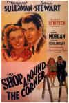

|
Shop Around the Corner,
The/A,B(Laser) |
MGMl/1940/BW/100m/1.33 |
The Shop Around The Corner is one of
my favorite Christmas movies. It's blatantly sentimental, the snowflakes patently
artificial, but it still reaches a level of sublime moviemaking. It epitomizes
Hollywood at its tasteful best. While tugging at the heartstrings it never lapses into
bathos; its charm never steps over the line into cuteness. Ernst Lubitsch achieves his
finest directorial moments in this lovingly realized romantic comedy set in pre World War
II Budapest viewed through an immigrant's veil of longing memory. And the best scenes are
set during Christmas.
 The characters work in a turn of the
century music shop. They interact, but they don't really see each other. In the meantime,
hoping to find love in their lives, Alfred and Klara each begin a correspondence with an
anonymous pen pal. Neither realizes the other is their correspondent. While they bicker at
the store and compete for the attention of the proprietor, they both hope that
meeting their letter writing friend will change their lives. Violins play with snowflakes
dancing on the bows.
As producer and director, Lubitsch has cast his film as a jeweler
selecting gems for his finest creation. The effortless style of James Stewart infuses shop
manager Alfred Kralik with a convincing touches of honesty and acid, romance and
practicality. Stewart can deliver lines like , "And I'd like to take this opportunity
Miss Novak to, inform you, that I don't walk like a duck and I'm not bowlegged,"
without missing a beat. This is one of Stewart's most appealing screen roles. Playing
opposite Stewart for the fourth and final time, Margaret Sullavan is a radiant Klara
Novak. The development of their delightfully rocky romance is the fulcrum on which the
various elements of the film balance beautifully.
Frank Morgan's Hugo Matuschek, proprietor of the gift shop where
the Stewart/Sullavan love-hate relationship evolves, provides able support, as do stock
player Felix Bressart and a surprisingly oily Joseph Schildkraut.
There is an overall magic that surrounds this production by
Lubitsch. The stylized sets of the streets of Budapest are not meant to be realistic; when
the snow falls in perfect flakes, it reinforces a fairy tale quality to the story. The
deft "Lubitsch Touch" is perfectly in tune to the characters and their world,
transparently transporting the audience along for the ride. The director allows the
emotions of the characters to communicate themselves naturally out of the plot and
dialogue. The absence of a musical soundtrack displays confidence that the Lubitsch
audience needs no extraneous scoring to reinforce how they are to respond to his
characters and situations.
The Shop Around the Corner is the inspirational for this
holiday season's romantic sure-fire hit, He's Got Mail. Updating the sublime is
difficult territory, but hopefully the new flick will have half the charm of its muse. MGM
also remade the movie as In the Good Old Summertime, a musical starring Judy
Garland in 1950. It had a very different feel.
Maybe MGM will release this special film on DVD sooner than
later. In the meantime, the laser disc presentation of this classic film is very good
visually. The elegant range of filmed blacks and whites is accurately reproduced in the
transfer. There are few noticeable blemishes. The soundtrack shows its age with a
persistent scratchiness as well as a annoying low level hum, perhaps all the more obvious
because of the absence of a background score. Along with the original theatrical trailer,
MGM has included an interesting short subject on the power that lights the movies to open
the disc program.
Excerpted
from
Puttin' on the Ritz |
The
Feature
Archive has articles ranging
from John Ford to Screen
Voices, The
Heistmasters, Akira
Kurosawa and Frank
Darabont.

Catch the Hollywood take on Blonde Bimbos by clicking on the
image above.
Check out the Movie
Poster Archive
for short bios and images of Susan Hayward, Kirk Douglas, Katharine
Hepburn and many more. This month's featured star is Clark
Gable.
Imaging
Science Foundation
The Imaging Science
Foundation promotes proper standards in home theater viewing. ISF
trained technicians offer monitor calibration services to consumers.
The difference in a properly calibrated monitor can be
astounding. Click on the image to find an ISF member near you
HOT
LINKS
DVD
Verdict
They may
be judgmental, but that's the point, isn't it. Lots of DVD reviews
plus news and more
The
Home Theater Forum
Looking for
lively and helpful exchanges on home theater, DVD, movies. Visit
this friendly site and get a hardy welcome.
Home
Theater Reference Reviewing System
When you read a DVD review it's of utmost importance to know what
equipment is being used to evaluate quality. Click on the projectors
to find out more.
|